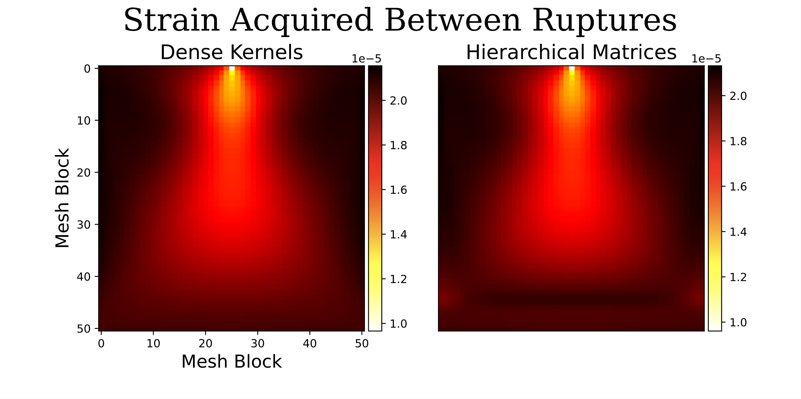

I worked for several months as an intern at the Southern
California Earthquake Center, working with Dr. Valère Lambert.
My project involved the implmentation of hierarchical matrices
into a long term earthquake simulation.
The accumulation of strain in off fault regions has implications
for the frequency and power of earthquakes, thus is important to
model if earthquake simulations are to serve as realistic
predictors. Naturally, simulating an increased volume brings
additional computational expense and can prove to be limiting.
Hierarchical matrices offer a potential solution for simulations
utilizing the boundary integral method, which loads strain onto
simulated regions through a matrix-vector product. Hierarchical
matrices maintain good accuracy of matrix vector products,
especially for matrices with a strong diagonal, and can reduce
the algorithmic runtime from O(n^2) to about O(nlogn).
In this project, hierarchical matrices were implemented using
Michael Bradley's code
dc3dm
which allowed the interfacing of Matlab and C++. The general
simulation code, including the physical problem and IO, were
handled in Matlab, with C++ kernels for the accumulation of
strain and a C++ interface to handle the matrix vector products.
The use of hierarchical matrices greatly improved the runtime
and memory use of each matrix vector product, as we can see
from the figure below.
Additionally, the accuracy of the simulation using hierarchical matrices was minimally affected.
